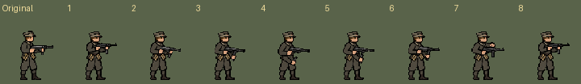

Strelac · punjenje oružja
Osam poza prati donji spremnik koji postoji na prihvaćenom crtežu: spuštanje oružja, vađenje spremnika, umetanje punog, rad zatvarača i povratak u nišan. Ovo je pripremljen art sa oznakama vremena; punjenje još nije povezano sa igrom.
Oznake služe kasnijem povezivanju logike i zvuka; same ne menjaju broj metaka. Cela radnja traje 1,60 s, a završni nišanski kadar ostaje zadržan. Kratak ponovljeni GIF ili nova proba ponovo pokreću radnju.
Svi kadrovi u veličini igre

Animirani GIF · Kadrovi i vremenske oznake · Izvor i tačan prompt